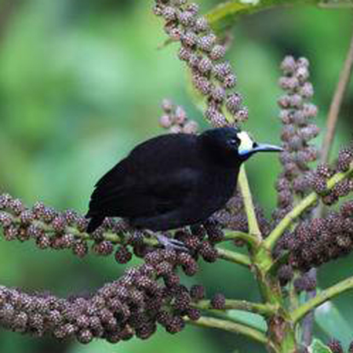

Paradigalla

|
long-tailed paradigalla (Paradigalla carunculata) อาศัยอยู่แถบปาปัวตะวันตก ประเทศอินโดนีเซียและ เขาอาร์ฟัค
ลักษณะ : เป็นนกที่มีขนาดใหญ่โดยเฉลี่ยมีขนาดประมาณ 37ซม. ขนตัวสีดำมีหางยาว จุดที่มีสีสันบนตัวมีแค่ที่เดียวคือหงอนลักษณะสีเหลือง สีแดง และสีฟ้าท้องฟ้าที่อยู่ใกล้จะงอยปาก ทั้งสองเพศมีลักษณะคล้ายกันแต่ตัวเมียจะมีขนาดเล็กกว่า |
|
short-tailed paradigalla (Paradigalla brevicauda) สันนิษฐานว่าในตอนแรกนกชนิดนี้เป็นกที่จะจับคู่กับกับตัวเมียเพียงตัวเดียวแต่ปัจจุบันก็ได้เปลี่ยนวิธีจับคู่เป็นแบบตัวเมียหลายตัว ถิ่นอาศัยอยู่แถบที่ราบสูงในป่าของนิวกินี อาหารที่กินส่วนใหญ่จะเป็นแมลงแลพผลไม้
ลักษณะ : มีขนาดประมาณ 23ซม. มีขืองน้ำเงินนสีดำเข้มปกคลุมทั้งตัวและจะงอยปากสีดำทรงเรียว มีหงอนสีเหลืองสว่างและสีฟ้าอยู่บริเวณใต้ตา ตัวผู้และตัวเมียมีลักษณะคล้ายกันโดยตัวเมียจะมีขนาดเล็กกว่าและมีหงอนเล็กกว่าและขนหางที่สั้นกว่า |
 |